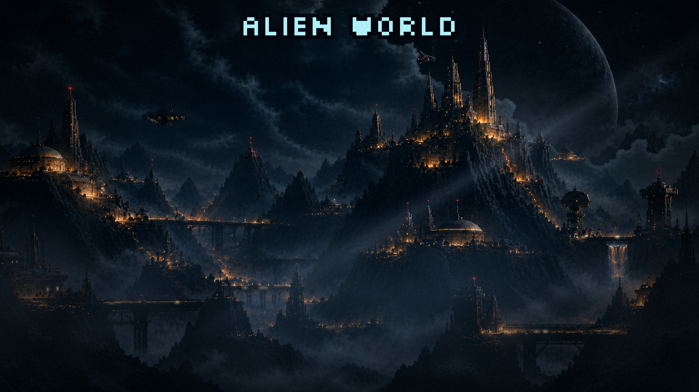
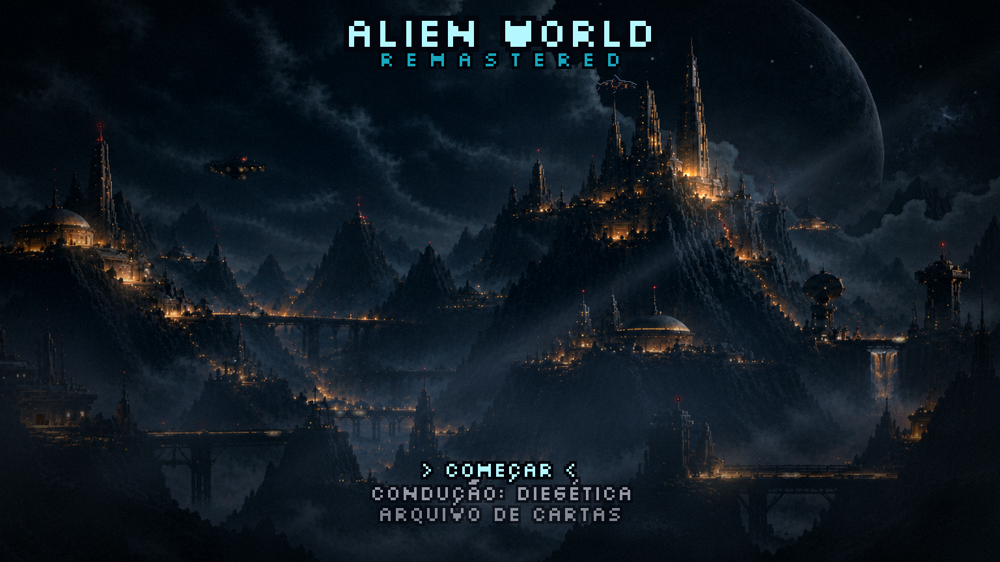
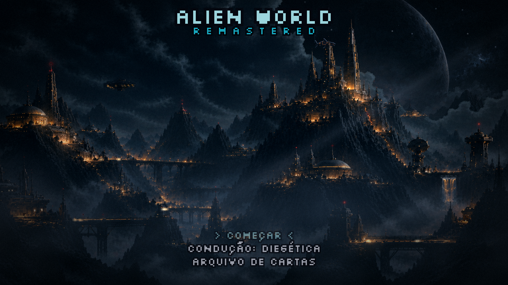
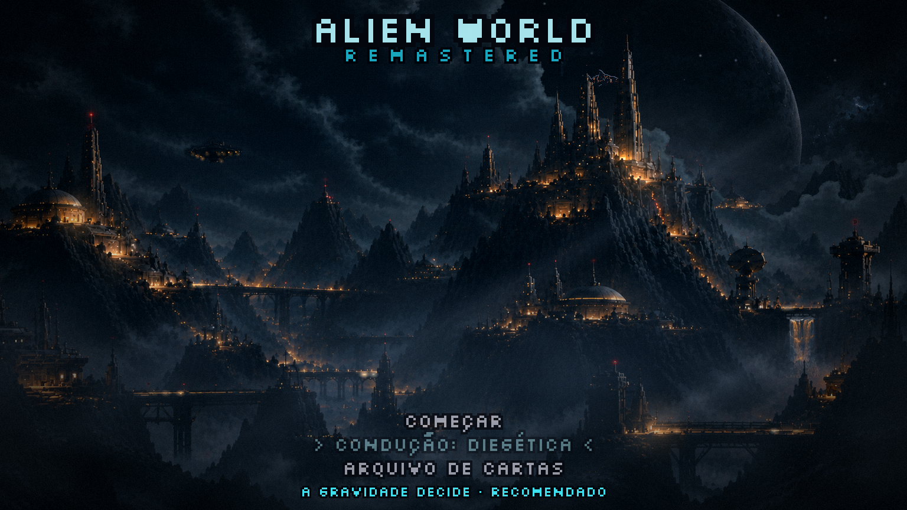
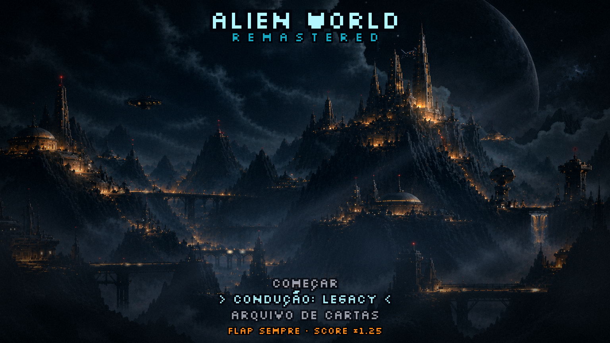
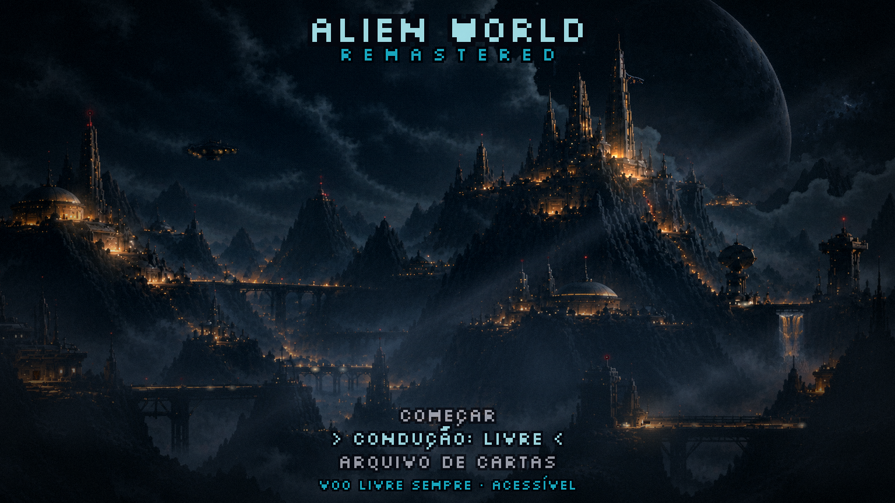
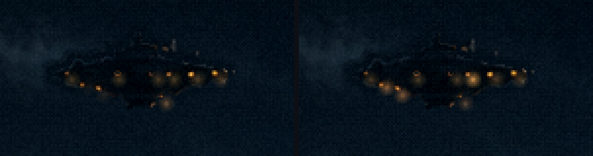

Menu refeito · rodada 5 · a abertura
19/10/2026. ← rodada 4 · Os seus pedidos: o título e as palavras no centro; alguns segundos só de cenário; as palavras descendo como se usassem estabilizadores, e a logo depois; a condução fora da tela para limpar o cenário; a nave parada, só com as luzes.
A abertura
| 0 – 1,2 s | O véu preto sai e revela a cidade. |
| ~2 s | O Leviatã sai da nuvem. A travessia começa 3 s adiantada (mesmo caminho, mesma velocidade), para os segundos de espera já terem o bicho. |
| 3,5 s | O título desce de fora da tela; o REMASTERED vem logo atrás. |
| 4,5 s | A lista desce em formação. |
| ~6 s | Tudo pousado: o menu já aceita teclas. Uma tecla antes disso pula direto para o menu pousado. |
| ~6,5 s | Aqui entra a logo, que ainda vamos definir (pergunta no fim). |
| 8 – 13,5 s | Só demonstração: o cursor vai à condução e troca os três valores. |
Os estabilizadores



Cada linha desce, freia, passa um pouco do ponto, volta e firma, como uma nave corrigindo nos estabilizadores. Ao mesmo tempo faz um ajuste lateral pequeno que morre sozinho. O título desce mais (de fora da tela) e a lista menos. As letras andam de pixel em pixel da tela, então ficam nítidas o tempo todo.
O texto no centro
O título fica no alto, nas nuvens entre a torre da esquerda e a cidadela. A lista fica embaixo, onde estava a condução. O meio da pintura fica livre.
O título subiu um pouco em relação à primeira tentativa: lá, o Leviatã saía da nuvem bem atrás do "ED" do REMASTERED. Agora ele sai logo abaixo, com o caminho livre.
A condução numa linha só
Sobre a sua pergunta: hoje, no jogo publicado, a condução aparece. Só as linhas de atalho de teste ([B] chefão, [I][O][P]…) somem fora do modo de desenvolvimento. A condução é escolha do jogador (o GDD: Diegética, Legacy ×1,25, Livre para acessibilidade), então ela não pode sumir, mas pode encolher:
- Ela vira um item da lista: "CONDUÇÃO: DIEGÉTICA". ↑↓ escolhem a linha, e ←→ trocam o valor.
- A descrição ("a gravidade decide · recomendado") só aparece com o cursor nessa linha.
- As teclas 1, 2 e 3 continuam funcionando como atalho, só não ficam escritas na tela.



A nave

A logo para decidir
O brasão redondo antigo não conversa com a pintura nova. Três caminhos:
- recomendoA logo é o próprio título. "ALIEN WORLD" vira um letreiro desenhado, no lugar da fonte: o metal escuro e a luz âmbar da colônia, mantendo o W de carinha alien. Na abertura, a lista desce e o letreiro acende por último, com as luzes ligando como as janelas da cidade. Fica uma marca só, e o céu continua livre para o Leviatã.
- Um brasão novo, mais o título. Um emblema da colônia de Kepler, redesenhado para essa cena, entrando depois das palavras. O custo: não cabe acima do título sem empurrá-lo para o caminho do Leviatã, então teria que morar em outro canto.
- Sem logo. O título em Silkscreen já é a marca, e o "momento da logo" vira só um brilho no título.
Em A ou B, é a peça que fica o tempo todo na tela. Por isso eu deixaria com você, como a pintura: eu passo o prompt em inglês e o tamanho exato, ou gero 3–4 bases para você trabalhar por cima.